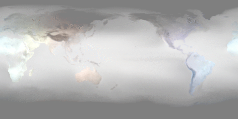

Entry 35¶
Beating heart world¶
John Gill
See the world flicker through the months as it warms and is bathed in sunlight.
This is an animation based on 40 years of climate reanalysis data.
The goal here is to fit models to this data and use these models to help provide better forecasts for future natural catastrophes.
In particular, hidden markov models will be fitted to the data to capture correlations in hazards across the globe and with luck reveal underlying quasi -periodic drivers that modulate the climate.
Karma Pi is a personal project where I explore data visualisation and simulation of all sorts.
From simulating the inners of black holes through the world’s climate and even the FIFA soccer world club common themes emerge.
Nested spheres of data are at the core of much that is here.
There is much to do here, these images for now are just ghostly flickers of models to come.
I should make it possible to see the anomaly relative to some mean – indeed there is code in ncdf that does that. But time is short.
The larger problem is this is just one variable of many that the ECMWF provides and they are just one such source of this data.
That is another aim of karmapi: how to make the exchange of such data as seamless as the exchange of software.
The world.gif image was created by using the convert to turn the png’s saved by karmapi.ncdf module into a gif.
A late entry, only hearing about the competition a couple of days ago.
And whilst this particular plot does not use matplotlib, there is also a MagicCarpet that does.
Thanks to John Hunter for all the inspiration.
Credits: European Centre for Medium Range Weather Forecasting for data. https://www.ecmwf.int/
Code and data: 1